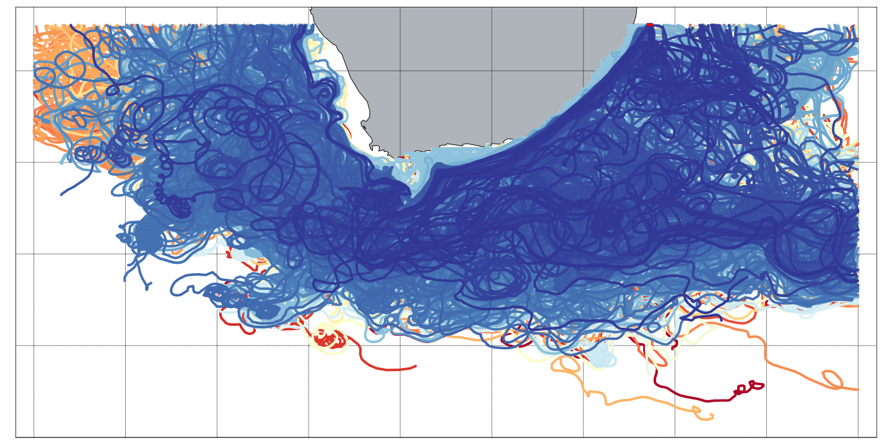
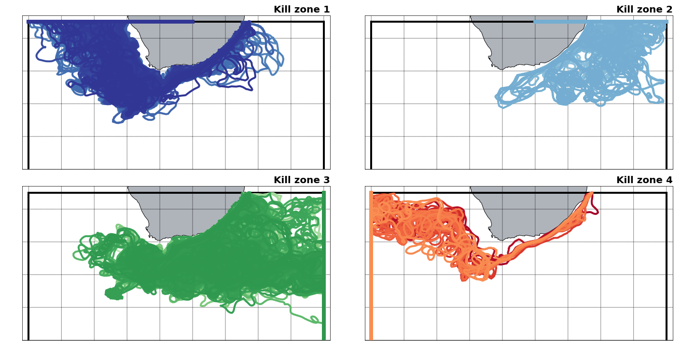
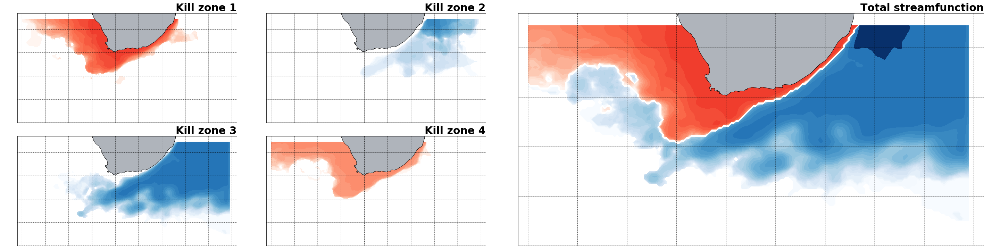
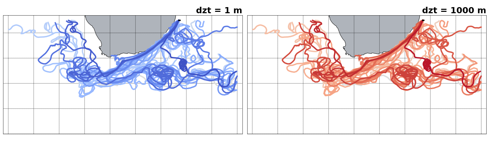

The AVISO data is stored on a Arakawa’s B-grid while TRACMASS is defined on a Arakawa’s C-grid. Therefore, both zonal and meridional fluxes are computed interpolating the velocity fields on the TRACMASS grid. This is done on the read_field subroutine. The default setup of this project initialises trajectories south of the Mozambique Channel only for southward fluxes (marked in red in the figure). The seeding takes place every day and ten trajectories are initialised in the location.

TRACMASS features: killing zones (exitType==1)
Four killing zones have been imposed to this run: two zonal boundaries at each side of the southern tip of Africa, and two meridional boundaries (see figure below). By doing so, we can filter trajectories based on which boundary they are terminated. This information is stored in the _rerun.csv file. Please remember that nend = 0 is reserved to trajectories which have exceeded the time limit and nend = 1 is reserved to those trajectories that reach the surface.

TRACMASS features: stream functions I (psixy - barotropic)
If stream function calculation (l_psi) is activated, a stream function will be calculated to each of the killing zones. This way one is able to separate the total lagrangian barotropic stream function into the different components depending of the killing zone. All the stream functions showed in the figure below are computed offline and with dirpsi equal to one.

The Lagrangian stream function may differ from the Eulerian stream function if the number of trajectories is not large enough.
TRACMASS features: dzt choice for 2-D simulations
The size of dzt in 2-D simulations (w_2dim) does not affect the calculation of trajectories in TRACMASS (see figure below). However, it will affect the volume/mass transport of the trajectories. Note that some trajectories may not be completely identical, but the mean paths are unaltered.
